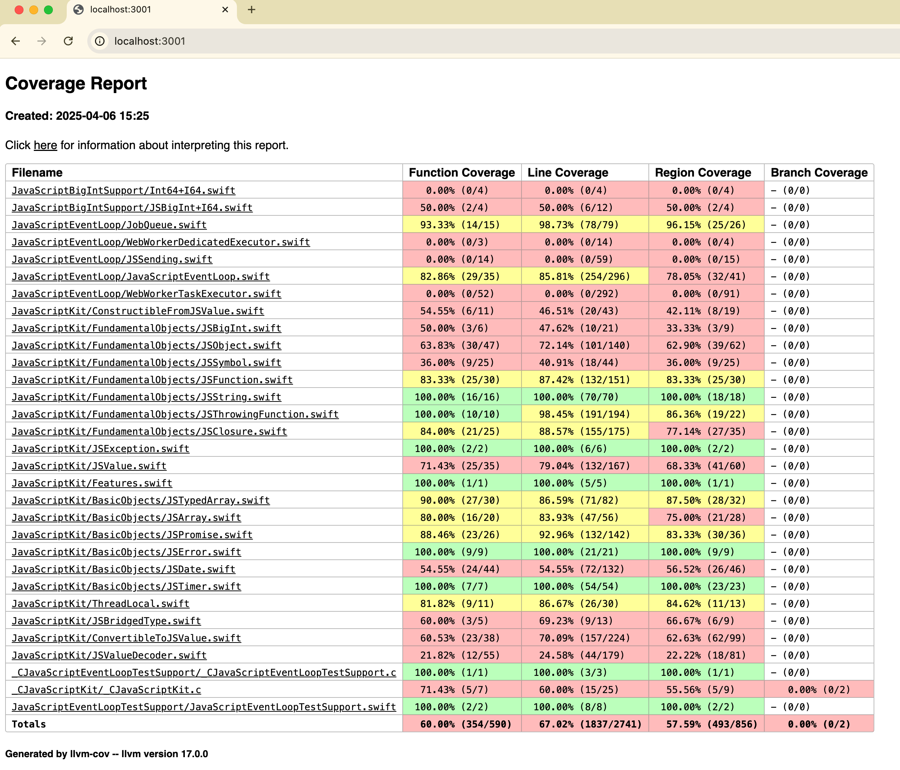

Article
Testing
Swift for WebAssembly supports both swift-testing and XCTest for writing test suites. Your project needs to have a Package.swift package manifest with test targets configured.
Testing in JavaScript environments
If you’re building a Wasm app that runs in JavaScript environments (browsers or Node.js), you can use JavaScriptKit’s testing utilities to run your tests directly in those environments. For detailed information on how to set up and run tests in JavaScript environments, please refer to the JavaScriptKit Testing documentation.
Standalone testing with WASI
If you prefer to run tests in a standalone environment without JavaScript, you can use WasmKit as described below.
Make sure your Package.swift has test targets configured. For example:
Note that swift test is supported for WebAssembly targets only in development snapshots of the Swift toolchain. Building tests and running them are two separate steps in Swift 6.2. but after building your tests, you can use a WASI-compatible host such as WasmKit to run the test bundle.
Ensure that you have a .testTarget defined in your Package.swift:
targets: [
.target(name: "Example"),
.testTarget(name: "ExampleTests", dependencies: ["Example"]),
]
Running test suites
Swift Development Snapshots
In Swift development snapshots, running swift test --swift-sdk <wasm_swift_sdk_id> is fully supported. When you have jq installed, you can run this command to compute Swift SDK ID automatically:
swift test --swift-sdk "$(swiftc -print-target-info | jq -r '.swiftCompilerTag')_wasm"
Swift 6.2
In Swift 6.2, swift test doesn’t know what WebAssembly environment you’d like to use to run your tests; building tests and running them are two separate steps. To build tests for WebAssembly, use the following command:
swift build --swift-sdk wasm32-unknown-wasi --build-tests
After building tests, you can run them using a WASI-compliant WebAssembly runtime such as WasmKit. Starting with Swift 6.2, WasmKit is included in Swift toolchains for Linux and macOS distributed on swift.org. For example, to run tests using WasmKit, use the following command (replace {YOURPACKAGE} with your package’s name):
wasmkit run .build/debug/{YOURPACKAGE}PackageTests.wasm --testing-library swift-testing
Most WebAssembly runtimes forward trailing arguments to the WebAssembly program, so you can pass command-line options of the testing library. For example, to list all tests and filter them by name, use the following commands:
wasmkit run .build/debug/{YOURPACKAGE}PackageTests.wasm list --testing-library swift-testing
wasmkit run .build/debug/{YOURPACKAGE}PackageTests.wasm --testing-library swift-testing --filter "FoodTruckTests.foodTruckExists"
Code coverage
You can also generate code coverage reports for your test suite when using development snapshots of the toolchain (not supported in Swift 6.2). To do this, you need to build your test suite with the --enable-code-coverage flag and the linker options -Xlinker -lwasi-emulated-getpid:
$ swift build --build-tests --swift-sdk $SWIFT_SDK_ID --enable-code-coverage -Xlinker -lwasi-emulated-getpid
After building your test suite, you can run it with wasmkit as described above. The raw coverage data will be stored in the default.profraw file in the current directory. You can use the llvm-profdata and llvm-cov tools to generate a human-readable report:
$ wasmkit run --dir . .build/wasm32-unknown-wasip1/debug/ExamplePackageTests.wasm
$ llvm-profdata merge default.profraw -o default.profdata
$ llvm-cov show .build/wasm32-unknown-wasip1/debug/ExamplePackageTests.wasm -instr-profile=default.profdata
# or generate an HTML report
$ llvm-cov show .build/wasm32-unknown-wasip1/debug/ExamplePackageTests.wasm -instr-profile=default.profdata --format=html -o coverage
$ open coverage/index.html

See Also
Porting code from other platforms
Make your code cross-platform and compatible with WebAssembly by checking for libraries and APIs available for this platform.
Concurrency
On macOS, iOS, and Linux, the
libdispatch-based executor is used by default, butlibdispatchis not supported in a single-threaded WebAssembly environment. However, there are still two global task executors available in Swift for Wasm.Debugging
Debugging is a crucial part of the development process. With official toolchains providing more integrated tools, debugging WebAssembly modules has become more streamlined.
Troubleshooting
These are some common issues you may run into while using Swift with WebAssembly.
Importing and Exporting Functions
WebAssembly modules often need to interact with their host environment. This guide demonstrates how to build a Swift guest module that both exports functions to the host and imports functions from it, using
WasmKitas the host application.Multi-threading
While Swift Concurrency is available in Swift for WebAssembly out of the box, it is single-threaded by default. Read this article for special considerations relevant to multi-threading.